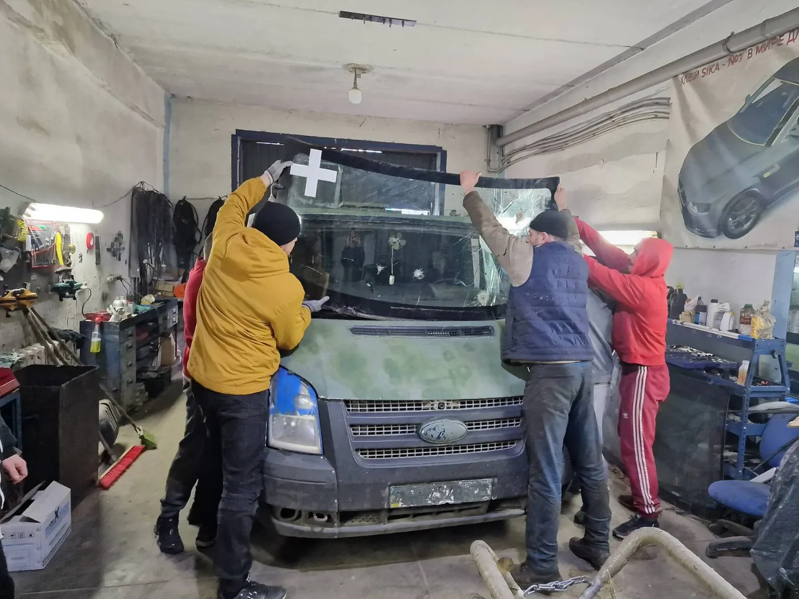
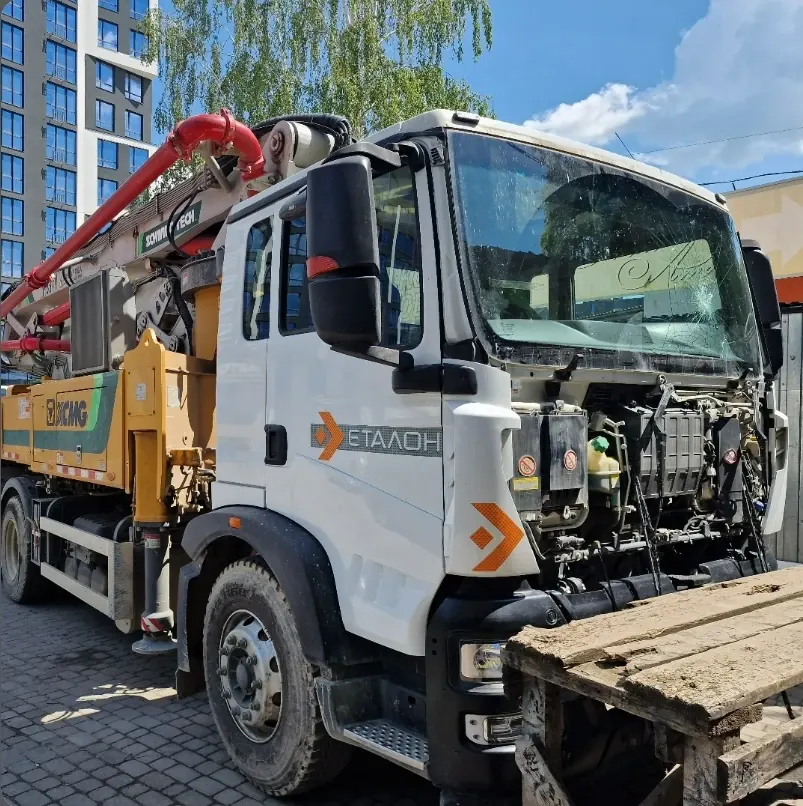
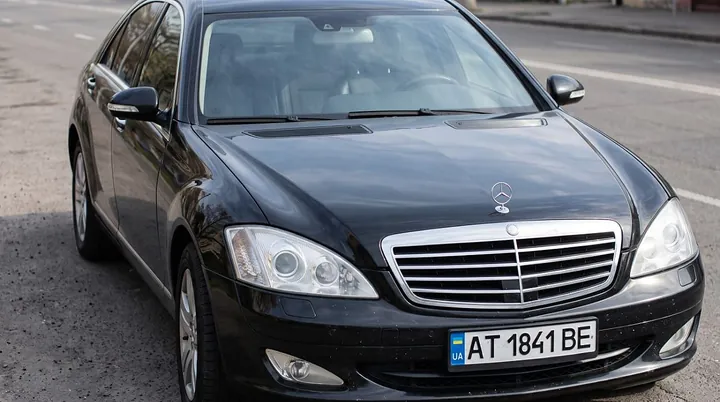
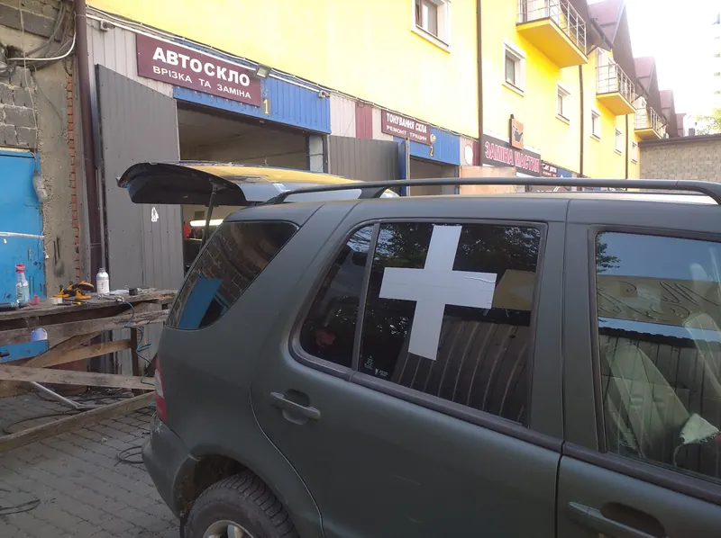

01Лобове скло
Тріщина зникає разом зі старим склом
З датчиками дощу, підігрівом, камерою. Знімаємо старе, чистимо рамку від корозії, вклеюємо нове. Машину можна забрати за 3–4 години.
Робота — від 1000 грн

або оберіть клас — покажемо скло на прикладі:
Заміна лобового, бокового й заднього скла, ремонт тріщин, люки й тонування. З 2005 року — від легковиків до TIR-ів. Угорники, Тисменицька, 249Б.
01Лобове скло
З датчиками дощу, підігрівом, камерою. Знімаємо старе, чистимо рамку від корозії, вклеюємо нове. Машину можна забрати за 3–4 години.
Робота — від 1000 грн
02Бокові скла
Знімаємо оббивку, вичищаємо уламки з дверей, перевіряємо склопідйомник. Скло на популярні моделі — в наявності.
Робота — від 1000 грн
03Заднє скло
Хетчбеки, седани, кришки багажника. Підключаємо й перевіряємо обігрів до того, як віддати авто. Скло під замовлення часто приїжджає за день.
Робота — від 1000 грн
04Люк і панорама
Встановлюємо й міняємо люки та панорамні дахи, прочищаємо забиті дренажі, щоб вода не йшла в салон. Фотозвіт роботи — за бажанням.
Ціну скажемо за маркою
05Тонування · Jeep Wrangler
Тонування — від 1000 грн
06Заявка · Jeep Wrangler
Торкніться вікна прямо на авто або на схемі.
Скло ще не позначено
3D-модель: —
Будь-який кузов
Легкові, бізнес-клас, позашляховики, буси й спецтехніка. Оберіть свій клас — покажемо скло на прикладі в 3D і позначите, що зламалось.

Octavia, Corolla, Focus, Megane, Lanos — хетчбеки, седани, універсали. Лобове з датчиком дощу й камерою, заднє з обігрівом.

RAV4, Tucson, Land Cruiser, X5, Duster — кросовери й пікапи. Немає скла на складі — знайдемо й проконтролюємо доставку.

Sprinter, Transit, Trafic, Vito — великі лобові для бусів і врізка скла в мікроавтобуси.

E-клас, BMW 5 і 7, Audi A6 і A8, Lexus — скло з підігрівом, під камеру й датчики, панорамні дахи.
Вантажівки, тягачі й техніка, що не влазить у звичайний бокс. Це справжнє фото з нашої роботи.
Подзвонити майстру
Перевірка за хвилину
Торкніться скла там, де пошкодження (вигляд із салону), і оберіть, яке воно. Скажемо, чи варто ремонтувати.
Торкніться скла там, де скол
Ремонт
Скол до 1 см — відремонтуємо
Ремонт від 500 грн, близько години.
Точно скаже майстер на огляді. Огляд безкоштовний.
Процес
Від огляду до моменту, коли ви сідаєте за кермо, — зазвичай 3–4 години.
Дивимось скол чи тріщину й чесно кажемо, що краще: ремонт за годину чи заміна.
На популярні моделі скло є на місці. Решту замовляємо й контролюємо доставку — часто привозять того ж або наступного дня.
Акуратно вирізаємо пошкоджене скло й прибираємо уламки.
Прибираємо старий клей і іржу в посадковому місці, щоб нове скло трималось і не протікало.
Ставимо нове скло, переклеюємо датчик дощу й кронштейни камери — без бульбашок.
Пояснюємо, чого не робити першу добу. На встановлення даємо гарантію.
Галерея
Фото з боксів на Тисменицькій і від клієнтів. Натисніть, щоб збільшити.
До і після

ДоПісляПідтримка війська
Лише за одну зиму — понад сорок військових авто. Лобові з дірками від уламків, бокові, вибиті вибухом.
«Відмовились брати гроші за виконану роботу»Сергій Гугіль, відгук на Google
Дякували бійці 102-ї бригади ТрО, 10-ї ОГШБр «Едельвейс», 80-ї ОДШБр, бригади НГУ «Червона калина» та волонтери.
Відгуки
«Міняла лобове скло на Chevrolet Volt. Роботи зроблені швидко і дуже якісно (ціна адекватна).»Chevrolet Volt · лобове
«Nissan Vanette 1993 року… хлопці не відмовили. Звернули увагу на корозію в посадковому місці, усе усунули та законсервували.»Nissan Vanette · корозія рамки
«Міняв панорамний дах. Якісно, швидко, фотозвіт і аргументовано по ціні.»Панорамний дах
«BMW X5, скло кришки багажника: самостійно здійснили пошук скла, контролювали доставку… швидко та якісно провели монтаж.»BMW X5 · кришка багажника
«Хотів переклеїти датчик дощу. Півгодини і поїхав додому… без всяких пупиришок і бульбашок, датчик працює ідеально.»Датчик дощу
«Скло встановлено ідеально, без зазорів чи дефектів. Усе детально пояснили та дотрималися обіцяних термінів.»Заміна скла
«Міняв лобове. Робота виконана чисто і професійно. Також прочистили забиті дренажі люка.»Лобове · дренажі люка
«За один день приїхало скло і зразу все замінили.»Golf 6 · заднє скло
Ціни
Ціна самого скла залежить від марки й комплектації — назвемо її по телефону.
Заміна скла
лобове, бокове, заднє — робота
від 1000 грн
Ремонт тріщин і сколів
близько години, без заміни скла
від 500 грн
Тонування
бокові й заднє скло плівкою
від 1000 грн
Огляд і консультація
скажемо, ремонт чи заміна
безкоштовно
Авто ЗСУ
робота
безкоштовно
Дізнатись ціну скла
050 433-22-88
Питання
Сама робота — кілька годин. Зазвичай машину можна забрати за 3–4 години: клей має схопитися. Точний час скажемо, коли запишемо вас.
Часто так: скол до 2,5 см і тріщину до 15 см, якщо вона не дійшла до краю скла. Ремонт — від 500 грн. Перевірте своє пошкодження в розділі «Ремонт чи заміна».
На популярні моделі — так. Решту замовляємо й контролюємо доставку; часто скло приїжджає того ж або наступного дня.
Так: легкові, буси, TIR-и, спецтехніка — аж до бетононасоса. Робимо врізку скла в мікроавтобуси.
Переносимо й переклеюємо датчик дощу та кронштейни на нове скло, без бульбашок. Можна приїхати лише з переклеюванням датчика.
Задні бокові й заднє скло — як завгодно темно. Передні бокові за правилами — не темніше 70% світлопропускання. Спробуйте плівки на 3D-авто в розділі «Тонування».
Так, на встановлення скла даємо гарантію. Після роботи пояснимо, чого не робити першу добу, щоб клей схопився правильно.
Івано-Франківськ, Угорники, вул. Тисменицька, 249Б — по дорозі на Тисменицю. Пн–Пт 9:00–18:00, Сб 9:00–15:00, неділя — вихідний.
Контакти
Івано-Франківськ, Угорники, 76018. Приїжджайте без запису — з дзвінком швидше.
